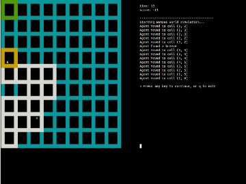

Hello, I'm
Cedric McDougal
I am a software developer living in Boston. I'm currently building NeighborSchools to help solve the child care crisis in the U.S.
This page is a collection of my various projects. You can check out my websites, code, music,
videos, papers and poems. If you want to get in touch, feel free to shoot me an email.
Thanks for stopping by!
Cedric in the South
I took a month long backpacking trip across Argentina and Bolivia. This is a blog about my journey.
Digital Grandparents Inc.
I am currently working on building a 401c3 not-for-profit organization called Digital Grandparents. The goal of this organization is to bring the Internet into the lives of the elderly. There are many ways to go about this, however, so Digital Grandparents is currently in an exploratory phase. I have been volunteering as a computer tutor in order to get a sense of where the need lies and how current solutions are lacking. Once I have identified these factors, I will narrow my focus and start moving the organization forward.
Digital Grandparents Inc. (original site)
When DGI began, the goal was to create a network of volunteers to teach computer classes at independent and assisted living facilities. I created a website to host tutorials and relay information about the organization, while my partner worked on training potential volunteers and reaching out to potential clients. Unfortunately, our efforts did not produce the results we were expecting. Ultimately, my partner ended up moving on to start a different company, and I decided that DGI needed to refocus. This is the original version of the site, from before the pivot.
walkaboutboston
For a school project I was tasked with walking around Boston and creating a photo blog of my trip. The goal was to highlight the differences between Boston and my hometown community. For the blog page, I wanted to try my hand at flat design since it is such a trend nowadays. The result looked so nice that I decided to re-create my personal site using a similar theme.
Personal Site (design 3)
Personal Site (design 2)
This is the second iteration of my personal site. It is definitely an improvement over the first iteration. For example, it uses a conventional navigation scheme, better fonts, and the picture of me makes it a little more personable. For this design, I decided to see how much I could do in CSS3/HTML5. As a result, there is no JavaScript or Flash on the entire site. However, this causes browser limitations, so you can't view the site in IE8 or less. Nevertheless, it was an interesting challenge to figure out how to do navigation with pure CSS. I'll give you a hint: I made use of the :target CSS pseudo-class. If you want to know more, feel free to poke around the source code.
Personal Site (design 1)
This is the first iteration of my personal site. This design is a bit clunky in terms of navigation and it relies on some Flash, but it has some nice home grown icons and a somewhat unique look-and-feel. I wanted to accomplish two things with this project: 1) mess around with icon design, and 2) learn more about SCSS/HAML (all the CSS/HTML in this site is generated from those two languages). Overall, this design was a good learning experience, even though it didn't turn out quite as clean as I would have liked.
TrafficSmart
This program was the final project in my Artificial Intelligence class. We were given an open-ended assignment to apply our knowledge of AI to create a real-world product. My idea was to create a network of smart traffic lights that track cars and communicate with each other in order to minimize the total time it takes for all cars to reach their destinations. My group and I started by creating an HTML5 urban traffic simulator. We then created a Python script to read in an initial state from a JSON file, run an algorithm to configure the traffic lights over time, and write a JavaScript file that contained the animation data to feed to our simulator. We then each individually competed to create an algorithm that could pass all cars out of the city in the fewest light cycles. My approach was to use a depth-limited breadth-first search on a tree of traffic light configurations using a heuristic function that would determine the best configuration. This performed well for small cities, but became exponentially more complex as traffic lights were added. I experiemented with a few tweaks to improve performance (such as trimming the branches of the tree and running the search with multiple processes), but ultimately the approach was not a success.

Wumpus World
This was another project in my Artificial Intelligence class. The goal was to create an AI agent to play the Wumpus World game, a game where you are traversing a dungeon to find gold while avoiding pits and the Wumpus monster. I implemented the agent using a combination of first-order logic (solved with the Prover9 theorem prover) and Python.
Beatles Dataset Builder
I created this program for the final project of my class on the history of the Beatles. We were allowed to pick any topic, so I chose to apply my knowledge of computer science to programatically analyze the Beatles' music and lyrics. Data retrieved through computer-driven quantitative textual analysis of Beatles lyrics (Linguistic Inquiry and Word Count) was combined with data retrieved from computer-driven quantitative auditory analysis of Beatles music (the Echo Nest) in order to build an extensive dataset that can answer a wide variety of multi-dimensional questions. This dataset spans the Beatles' career and provides metrics such as danceability, energy, positive emotions, negative emotions, self-referential lyrics, big words, etc. It can be indexed by year, album, songwriter, chart position, and more. I used this dataset in my final paper to gain insight into the Beatles' music.
Handman
I took a mobile application development class in which the theme of the final project was to create an Android app that would help with health in some way. Since my mom developed micrographia when she had a stroke, I decided to create an app that could help her with that condition. That app is Handman. It is a modification of hangman in which you can prevent the usual body-part penalty by accurately tracing the letter that you incorrectly guessed. The idea is a mashup of two things I learned from my mom. First, studies have shown that using your pointer fingers to write large letters is an effective way to regain your writing ability. Second, occupational therapy sucks. My goal in making this game was to create a fun way for people with micrographia to regain the ability to write.
Notable
In my college software development course, our final project was to create a program that can randomly generate a piece of music. I called mine Notable. I did the project in Java and it can be run from the command line. It takes a configuration file and outputs a text file that can be read by the LilyPond program to create a midi representation of the music. You can configure it for different instruments, keys, difficulties, and a number of other parameters.